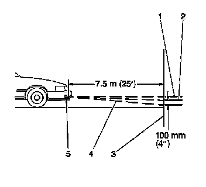
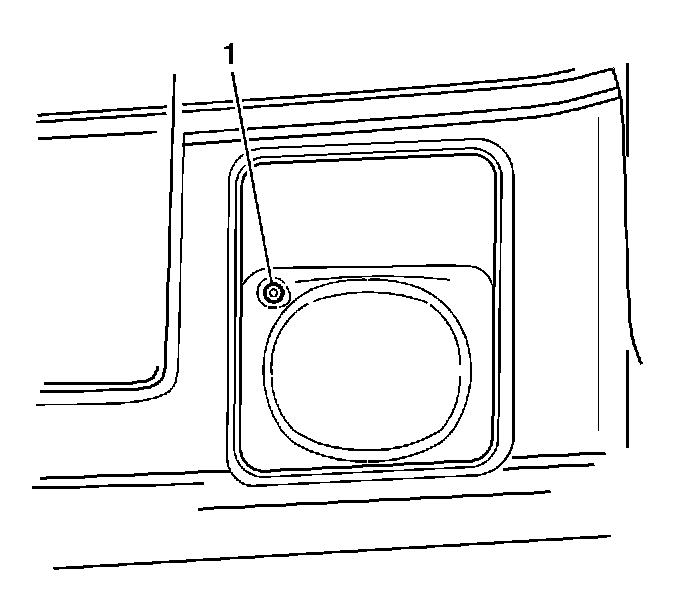

Fog Lamp Aiming (Base)
Fog Lamp Aiming (Base)
Adjustment Procedure
Proper road illumination and safety require the fog lamps to be aimed. The front fog lamp aim should be checked when a new front fog lamp assembly is installed, or if any service repairs have been performed to the vehicle which disturb the front fog lamp mounting or the vehicle ride height.
There are no horizontal adjustments for aiming the front fog lamp assemblies on this vehicle.

1. To ensure accurate vertical front fog lamp aiming, first perform the following steps to prepare the vehicle.
* Make sure that all the components are in place on the vehicle, the tires are properly inflated, and there is not any mud or snow clinging to the vehicle.
* Stop all other operations of work on the vehicle.
* Make sure the fuel level is 1/2 full or more.
* Jounce the vehicle to settle the suspension.
* Place the vehicle on a level surface 7.6 m (25 ft) from the target screen.
* Measure the distance from the floor to the center of the fog lamp (5).
* Using this measurement, mark the horizontal centerline of the fog lamp (1) on the target screen directly in front of the vehicle.
* Start the vehicle in order to level the suspension.
2. Turn the front fog lamps ON.

3. Adjust (1) the fog lamp up or down until the top edge of the high intensity zone on the screen is 102 mm (4 in) below the horizontal centerline (1).
4. Turn OFF the front fog lamps.